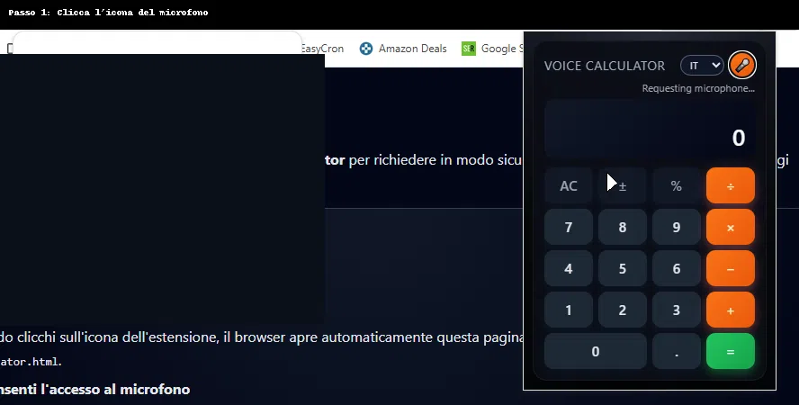

Voice Calculator – Guide
This page is used by the Voice Calculator Chrome extension to request microphone
access safely. Follow the steps below to enable and use the voice commands.
English
How to use the extension
1. Open this page
When you click the extension icon, your browser will automatically open this page:
https://ono77.github.io/voice-calculator/.
2. Allow microphone access
- Look at the small popup at the top asking to use your microphone.
- Click “Allow while using this site” (or similar option).

Example of the Chrome dialog asking to allow microphone access for this site.
3. Re-open the extension popup
- Click again on the Voice Calculator icon in the Chrome toolbar.
- The calculator window will appear with all the buttons and a microphone icon.
4. Choose language & click the mic
- Select your language (IT / EN / ES / FR) from the small dropdown.
- Click on the 🎤 microphone icon in the popup.
- Wait until you see the message “Listening…”.
5. Speak your operation
- Say an operation, for example:
seven times eightfive plus threefour hundred thousand times four hundred thousand
- The recognized text will appear under the title, and the result in the main display.
Italiano
Come usare l'estensione
1. Apri questa pagina
Quando clicchi sull'icona dell'estensione, il browser apre automaticamente
questa pagina:
https://www.onlinegratis.net/voice-calculator.html.
2. Consenti l'accesso al microfono
- In alto comparirà una finestra che chiede di usare il microfono.
- Clicca su “Consenti durante la visita al sito” (o opzione simile).
Example of the Chrome dialog asking to allow microphone access for this site.
3. Riapri il popup dell'estensione
- Clicca di nuovo sull'icona di Voice Calculator nella barra di Chrome.
- Si aprirà la calcolatrice con tutti i tasti e l'icona del microfono.
4. Scegli la lingua e clicca il microfono
- Seleziona la lingua (IT / EN / ES / FR) dal menu a tendina.
- Clicca sull'icona 🎤 microfono nel popup.
- Attendi il messaggio “Listening…” / “In ascolto…”.
5. Pronuncia l'operazione
- Pronuncia un'operazione, ad esempio:
sette per ottocinque più trequattrocentomila per quattrocentomila
- Il testo riconosciuto apparirà sotto il titolo e il risultato nella calcolatrice.